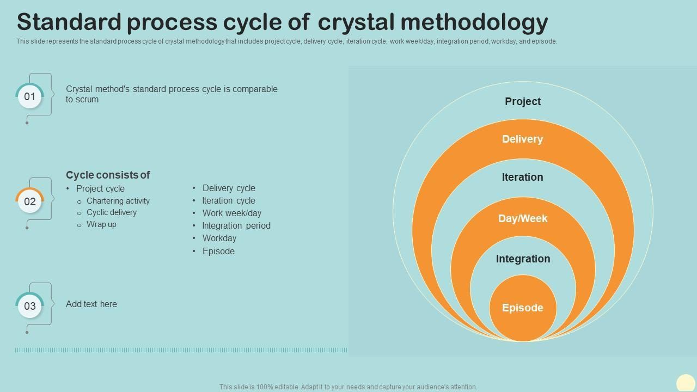
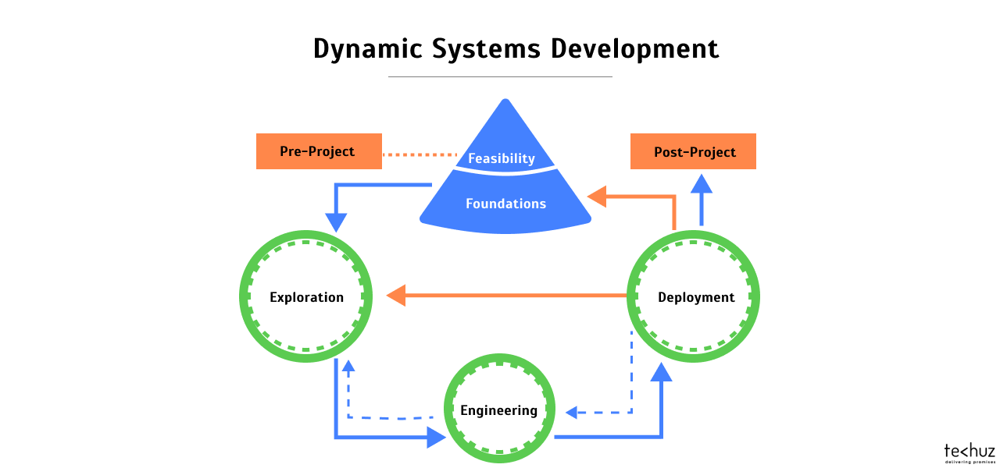
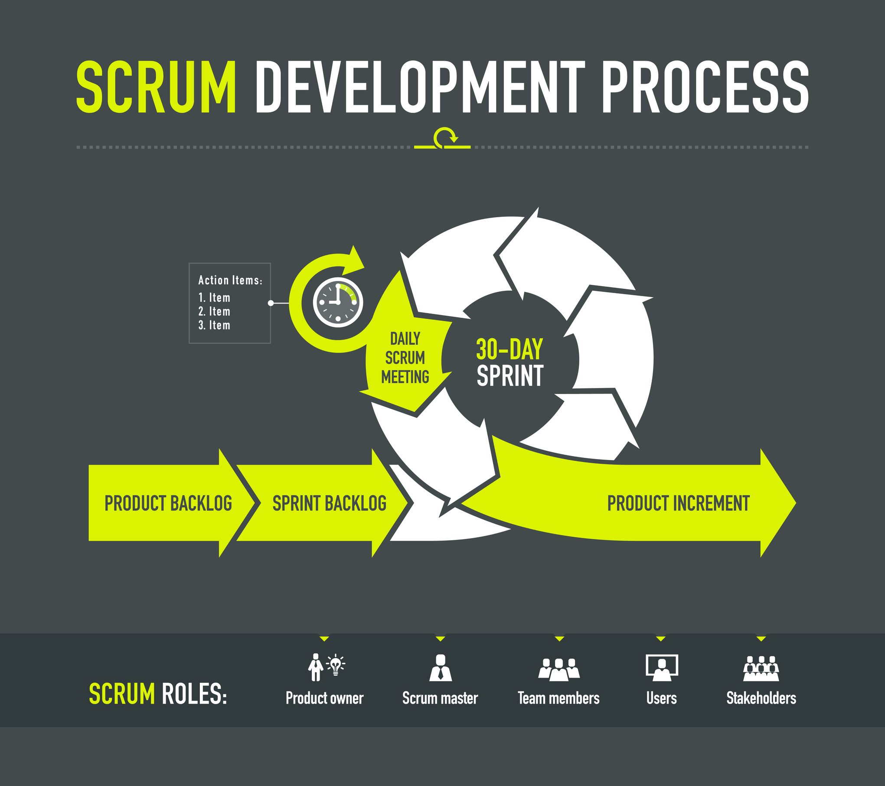
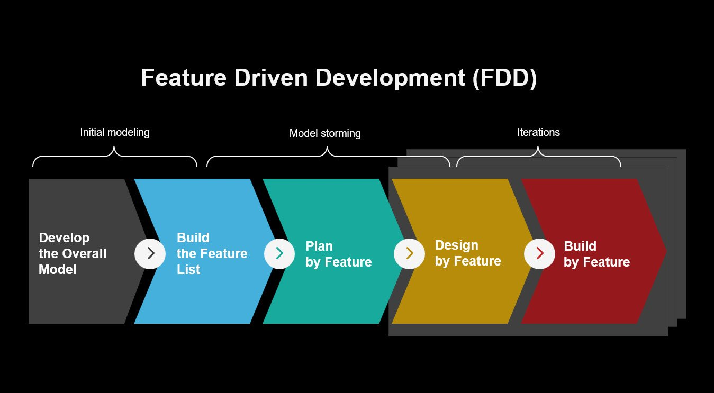
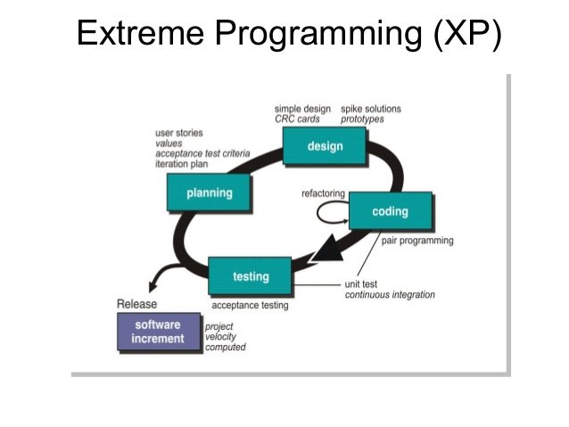
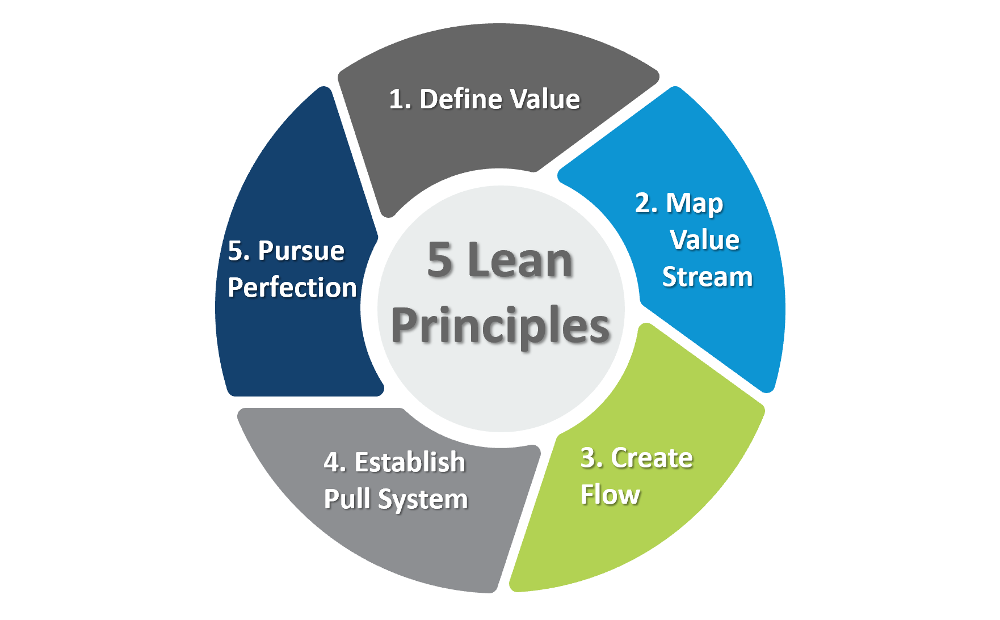

AGIILNE ARENDUSMEETOD
Agiilne mudel loodi peamiselt selleks, et aidata projektil kiiresti kohaneda muutustega. Seega on Agile mudeli peamine eesmärk hõlbustada projekti kiiret lõpetamist. Selle ülesande täitmiseks on vaja paindlikkust. Agility saavutatakse protsessi sobitamisega projektiga ja eemaldades tegevused, mis ei pruugi olla konkreetse projekti jaoks olulised. Samuti välditakse kõike, mis on aja ja vaeva raiskamine. Agiilne mudel viitab arendusprotsesside rühmale. Nendel protsessidel on mõned põhiomadused, kuid neil on teatud väikesed erinevused. Järgnevad meetodid on:
Crystal Agile'i metoodika:
Dünaamiliste süsteemide arendusmeetod (DSDM):
Scrum:
Funktsioonipõhine arendus (FDD):
Extreme programmeerimine (XP):
Lean areng:
Crystal Agile'i tarkvaraarenduse metoodika paneb suurt rõhku tõhusa suhtluse ja koostöö edendamisele meeskonnaliikmete vahel, aga ka inimlike elementide arvestamisele, mis on eduka arendusprotsessi jaoks üliolulised. See metoodika on eriti kasulik suure ebakindlusega projektide puhul, kus nõuded kipuvad sageli muutuma.
DSDSM-i metoodika on kohandatud mõõduka kuni suure ebakindlusega projektidele, kus nõuded muutuvad sageli. Selle selged rollid ja kohustused keskenduvad töötava tarkvara tarnimisele lühikese aja jooksul. Juhtimistavad eristavad seda ja muudavad selle tõhusaks lähenemisviisiks meeskondade ja projektide jaoks.
Scrumi metoodika on raamistik keeruliste projektide lahendamisel ja nende eduka lõpuleviimise tagamisel. Seda juhivad Scrum Master, kes jälgib protsessi, ja tooteomanik, kes määrab prioriteedid. Arendusmeeskond, kes vastutab tarkvara tarnimise eest, on teine oluline mängija.
FDD-lähenemist rakendatakse, kasutades selle eesmärgi saavutamiseks mitmeid tehnikaid, nagu funktsiooniloendite loomine, mudelite hindamine ja funktsioonipõhise meetodi rakendamine. See metoodika on eriti tõhus tagamaks, et lõpptoode tarnitakse õigeaegselt ja see vastab kliendi nõudmistele. Scrum: Scrumi metoodika on raamistik keeruliste projektide lahendamisel ja nende eduka lõpuleviimise tagamisel. Seda juhivad Scrum Master, kes jälgib protsessi, ja tooteomanik, kes määrab prioriteedid. Arendusmeeskond, kes vastutab tarkvara tarnimise eest, on teine oluline mängija.
Extreme Programming kasutab nende eesmärkide saavutamiseks spetsiifilisi tavasid, nagu paarisprogrammeerimine, pidev integreerimine ja testimispõhine arendus. Extreme programmeerimine sobib ideaalselt projektidele, mille ebakindlus on kõrge ja mis nõuavad sagedast muutmist, kuna võimaldab kiiresti kohaneda uute nõuete ja tagasisidega.
Lean Development põhineb säästliku tootmise põhimõtetel ja selle eesmärk on protsessi sujuvamaks muutmine, tuvastades ja eemaldades mittevajalikud sammud ja tegevused. See saavutatakse selliste tavade abil nagu pidev täiustamine, visuaalne juhtimine ja väärtusvoo kaardistamine, mis aitab tuvastada parendusvaldkondi ja muudatusi vastavalt rakendada.
